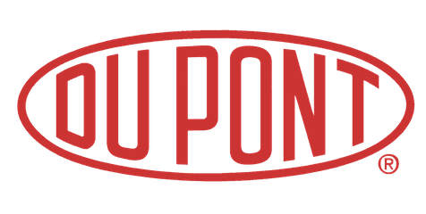

Aquaporin Revolutionizing water purification through biotechnology Project Summary
Arla Revealing the consequences of processing milk Project Summary
 Du Pont Adding value and stability to fermented milk drinks Project Summary
CO-RO Making The Best Soft Drink Possible Project Summary
Ferring Pharmaceuticals Controlling the stability of pharmaceuticals Project Summary
GubraRevealing peptide structure-function relationship Project Summary
Haldor Topsøe Speeding up catalysis Project Summary
Novo Nordisk Improving the stability of protein based medicine Project Summary
 Novozymes
New angles on understanding the use of enzymes
Project Summary
Novozymes
New angles on understanding the use of enzymes
Project Summary
PPG Watching paint dry Project Summary
Rigshospitalet Stopping microorganism invasions Project Summary
Symphogen On the road to effectively treating cancer Project Summary